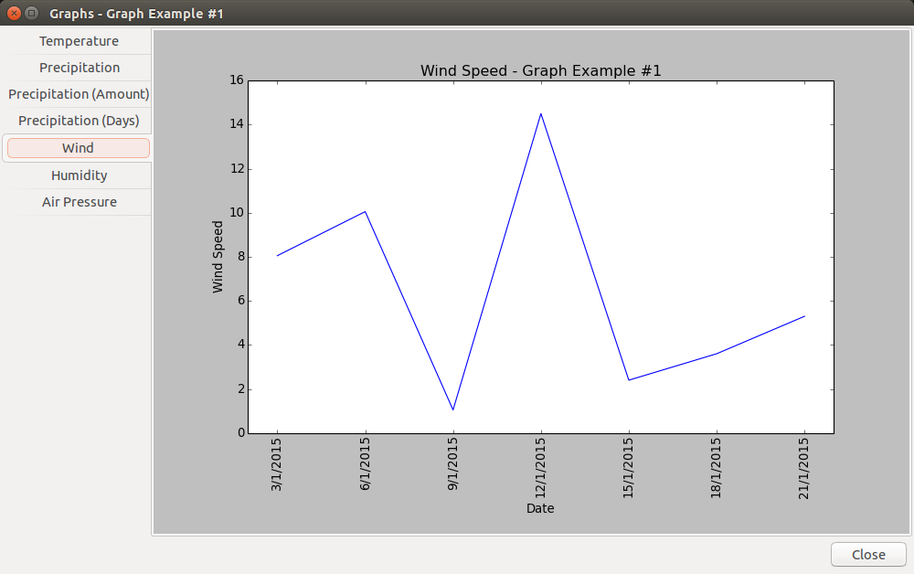

Viewing Graphs
WeatherLog can display graphs to visualize the data that has been entered. To view the graphs, click on the Graphs item in the Info menu.
There are graphs available to show the changes in the temperature, precipitation amount, wind speed, humidity, and air pressure. In addition, WeatherLog can display pie charts to show the percentages of each type of precipitation and how many days there were with each type.